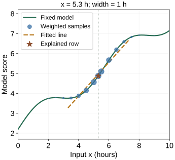

LIME: Local Surrogate Explanations
A complicated model may behave like a simple line over a small region. LIME fits that local approximation and explains its coefficients. The important word is local: changing the region can change the explanation even when the original model and its prediction remain fixed.
This chapter follows one numerical fit from sampled inputs to a readable conclusion. You can inspect the fitted line, change its neighborhood, and check where it stops describing the model well.
Start with the question and the data we fit
Call the fixed predictor $f$ and the row to explain $x_0$. Our constructed example has one input, measured in hours, and produces an arbitrary score. At $x_0=5.3$ hours its score is about 4.8742. There are no true outcome labels here: the values we try to explain are the predictor’s own outputs.
Choose modified inputs $z_i$, query their model scores $f(z_i)$, and assign weights $w_i$ so nearby inputs matter more. Fit a line $g$ to these pairs. We write it in a form centered on the explained row:
Here $a$ is the line’s prediction at $x_0$, and $b$ is its slope in score units per hour. Neither is a new parameter of $f$. The line is an explanation model, also called a surrogate.
See how “nearby” changes the answer
The figure starts with input values spaced every half hour from 0 to 10, plus the explained row when it is not already present. You can switch to 24 uniformly sampled inputs from the same range, plus the row. Changing the width changes their weights; it does not generate a new sample set.

The fixed model predicts 4.8742. The fitted line predicts 4.9653 at this row.
The fitted slope is 0.8470 score units per hour. The line’s row error is +0.0911; its RMSE on a separate local probe grid is 0.1042.
{kind=link}
At the default setting, the line predicts about 4.9653 at 5.3 hours, while the model predicts 4.8742. Its slope is about 0.8470 score units per hour. For a small move of 0.1 hour, the line therefore predicts a score increase of about 0.0847. It is an approximation over the selected neighborhood, not a promise about every input.
Now select 2.8 hours. With the fixed grid and width 0.35, the fitted slope is slightly negative, about −0.0112. With width 2.5 it becomes positive, about +0.4875. The wide line sees the broader upward trend; the narrow line sees a nearly flat local dip. Saying only “this feature has a positive effect” would hide the choice that changed the answer.
Explain the fitting objective
Let $h>0$ denote the width, in the same units as the input. Our example uses the distance $|z_i-x_0|$ and an exponential weight. A sample at the row receives weight 1; one width away receives about 0.607; two widths away receives about 0.135.
We then choose the line that minimizes the sum of weighted squared residuals:
A residual is the model output minus the line’s prediction. Squaring makes both positive and negative errors count. Multiplying by $w_i$ makes errors near the row more expensive. A narrow kernel concentrates the fit, but a finite sample may leave very few points with substantial weight.
Optional: how this relates to the full LIME objective
With many inputs, an explanation may allow only a few nonzero coefficients or penalize coefficient size. Write $C(g)$ for that complexity cost and $\lambda$ for its strength. The broader objective adds $\lambda C(g)$ to the weighted fitting loss. Our one-feature example fixes the surrogate family and uses no extra penalty, so we can inspect the local fit directly. The LIME paper introduces the general fidelity–complexity tradeoff.
For reproducibility, our fixed score function is $f(x)=2.2+0.55x+0.55\sin(1.1x)$ when $x$ is the numerical input in hours. The sine argument is dimensionless; the coefficient 1.1 carries the corresponding inverse-hour scale. The examples use NumPy least squares, not the LIME package.
Read the explanation in its actual units
The same local line can have very different-looking coefficients after a unit conversion. Keep the default fitted line and express the input in minutes instead of hours. Both the input differences and the kernel width must change together if we want the same fit.
A 0.1-hour change predicts +0.0847 score units. Expressing it as 6 minutes gives the same change.
The slope changes from about 0.8470 per hour to 0.0141 per minute. Multiplying by the same physical change gives the same predicted score change. If you rescale the inputs but keep the numerical kernel width fixed, you change the neighborhood too.
Tabular LIME may explain standardized numeric values or binary conditions such as “duration is in this interval.” A coefficient for that condition is a contrast between representation states, not a derivative per hour. Read the feature representation before interpreting a bar’s size. The tabular implementation exposes discretization, scaling, sampling, and kernel settings.
For text, an interpretable coordinate can mean whether a word is present; for images, whether a region is kept. The mask must be mapped back to an actual text or image before querying the predictor. A simple explanation representation does not require the original model to use those same features internally.
Check the fit before turning a slope into a sentence
The figure reports three distinct errors. Row error is the line’s prediction minus the model’s prediction at the explained input. Training RMSE is the square root of the weighted average squared error on the fitted samples. Probe RMSE measures the line against the model on a separate dense grid within half an hour of the row.
The probe interval stays fixed when width changes, so the reported probe errors assess the same local region. The training RMSE uses changing weights and is not directly the same comparison. The probe grid supplies no real outcome labels: both checks measure model agreement.
| Change one thing | What you learn |
|---|---|
| Sample seed | Does finite sampling noticeably change the local fit? |
| Neighborhood width | How dependent is the explanation on which behavior counts as local? |
| Nearby explained row | Does the conclusion change near a bend or decision boundary? |
| Perturbation rule | Do modified inputs remain meaningful for the prediction question? |
A low error on unrealistic inputs does not make a useful explanation. For example, changing a total while leaving all its components fixed can create invalid rows; independently altering correlated features can move outside the data the model usually sees. Review the perturbed inputs, not just the coefficient plot.
LIME need not reproduce the original prediction exactly. Its base API returns a local prediction and fitting score alongside the coefficients. If local agreement is poor, report that limitation rather than treating the line as the predictor itself.
Download the NumPy/Matplotlib reproduction script, all samples, weights, and fitted values, or the summary CSV. Running python lime_local_fit.py regenerates all 27 plots and both data files. The chapter’s settings are explicit teaching choices, not claims about package defaults.
If your question is instead how to share a prediction’s difference from a reference, continue to Shapley values. The method-selection chapter connects the explanation question to the appropriate validation.
References and further reading
- Ribeiro, Singh & Guestrin: “Why Should I Trust You?” — local fidelity, interpretable representations, and sparse explanation models.
- LIME base API — weighted regression, the local prediction, and the returned fitting score.
- LIME tabular source — the explicit choices behind continuous-feature discretization, scaling, perturbations, and kernel width.